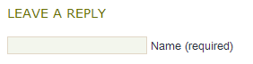

UPDATE: This post has now been updated, reviewed and released as a W3C article. See http://www.w3.org/International/questions/qa-personal-names.
People who create web forms, databases, or ontologies in
English-speaking countries are often unaware how different people’s
names can be in other countries. They build their forms or databases in a
way that assumes too much on the part of foreign users.
I’m going to explore some of the potential issues in a series of blog
posts. This content will probably go through a number of changes
before settling down to something like a final form. Consider it more
like a set of wiki pages than a typical blog post.
Scenarios

It seems to me that there are a couple of key scenarios to consider.
A You are designing a form in a single language (let’s assume English) that people from around the world will be filling in.
B You are designing a form
in a one language but the form will be adapted to suit the cultural
differences of a given locale when the site is translated.
In reality, you will probably not be able to localise for every
different culture, so even if you rely on approach B, some people will
still use a form that is not intended specifically for their culture.
Examples of differences
To get started, let’s look at some examples of how people’s names are different around the world.
Given name and patronymic
In the name Björk Guðmundsdóttir Björk is the given
name. The second part of the name indicates the father’s (or sometimes
the mother’s) name, followed by -sson for a male and -sdóttir for a
female, and is more of a description than a family name in the Western
sense. Björk’s father, Guðmundor, was the son of Gunnar, so is known as
Guðmundur Gunnarsson.
Icelanders prefer to be called by their given name (Björk), or by
their full name (Björk Guðmundsdóttir). Björk wouldn’t normally expect
to be called Ms. Guðmundsdóttir. Telephone directories in Iceland are
sorted by given name.
Other cultures where a person has one given name followed by a
patronymic include parts of Southern India, Malaysia and Indonesia.
Different order of parts
In the name 毛泽东 [mao ze dong] the family name is
Mao, ie. the first name, left to right. The given name is Dong. The
middle character, Ze, is a generational name, and is common to all his
siblings (such as his brothers and sister, 毛泽民 [mao ze min], 毛泽覃 [mao
ze tan], and 毛澤紅 [mao ze hong]).
Among acquaintances Mao may be referred to as 毛泽东先生 [mao ze dong xiān
shēng] or 毛先生 [mao xiān shēng]. Not everyone uses generational names
these days, especially in Mainland China. If you are on familiar terms
with someone called 毛泽东, you would normally refer to them using 泽东 [ze
dong], not just 东 [dong].
Note also that the names are not separated by spaces.
The order family name followed by given name(s) is common in other countries, such as Japan, Korea and Hungary.
Chinese people who deal with Westerners will often adopt an
additional given name that is easier for Westerners to use. For
example, Yao Ming (family name Yao, given name Ming) may write his name
for foreigners as Fred Yao Ming or Fred Ming Yao.
Multiple family names
Spanish-speaking people will commonly have two family names. For example, Maria-Jose Carreño Quiñones may be the daughter of Antonio Carreño Rodríguez and María Quiñones Marqués.
You would refer to her as Señorita Carreño, not Señorita Quiñones.
Variant forms
We already saw that the patronymic in Iceland ends in -son or
-dóttir, depending on whether the child is male or female. Russians use
patronymics as their middle name but also use family names, in the
order given-patronymic-family. The endings of the patronymic and family
names will indicate whether the person in question is male or female.
For example, the wife of Борис Никола́евич Ельцин (Boris Nikolayevich Yeltsin) is Наина Иосифовна Ельцина (Naina Iosifovna Yeltsina) – note how the husband’s names end in
consosonants, while the wife’s names (even the patronymic from her
father) end in a.
Mixing it up
Many cultures mix and match these differences from Western personal names, and add their own novelties.
For example, Velikkakathu Sankaran Achuthanandan is a
Kerala name from Southern India, usually written V. S. Achuthanandan
which follows the order familyName-fathersName-givenName. In many parts
of the world, parts of names are derived from titles, locations,
genealogical information, caste, religious references, and so on, eg.
the Arabic Abu Karim Muhammad al-Jamil ibn Nidal ibn Abdulaziz al-Filistini.
In Vietnam, names such as Nguyễn Tấn Dũng follow the
order family-middle-given name. Although this seems similar to the
Chinese example above, even in a formal situation this Prime Minister of
Vietnam is referred to using his given name, ie. Mr. Dung, not Mr. Nguyen.
Further reading
Wikipedia sports a large number of fascinating articles about how
people’s names look in various cultures around the world. I strongly
recommend a perusal of the follow links.
Akan • Arabic • Balinese • Bulgarian • Czech • Chinese • Dutch • Fijian • French • German • Hawaiian • Hebrew • Hungarian • Icelandic • Indian • Indonesian • Irish • Italian • Japanese • Javanese • Korean • Lithuanian • Malaysian • Mongolian • Persian • Philippine • Polish • Portuguese • Russian • Spanish • Taiwanese • Thai • Vietnamese
Consequences
If designing a form or database that will accept names from people with a variety of backgrounds, you should ask yourself whether you really need to have separate fields for given name and family name.
This will depend on what you need to do with the data, but obviously
it will be simpler to just use the full name as the user provides it,
where possible.
Note that if you have separate fields because you want to use the
person’s given name to communicate with them, you may not only have
problems due to name syntax, but there are varying expectations around
the world with regards to formality also that need to be accounted for.
It may be better to ask separately, when setting up a profile for example, how that person would like you to address them.
If you do still feel you need to ask for constituent parts of a name separately, try to avoid using the labels ‘first name’ and ‘last name’, since these can be confusing for people who normally write their family name followed by given names.
Be careful, also, about assumptions built into algorithms that pull out the parts of a name automatically. For example, the v-card and h-card approach of implied “n” optimization could have difficulties with, say, Chinese names. You should be as clear as possible about telling people how to specify their name so that you capture the data you think you need.
If you are designing forms that will be localised on a per culture
basis, don’t forget that atomised name parts may still need to be stored
in a central database, which therefore needs to be able to represent
all the various complexities that you dealt with by relegating the form
design to the localisation effort.
I’ll post some further issues and thoughts about personal names when time allows.
[See part 2.]


{kind=link}
{kind=link}
{kind=link}
{kind=link}